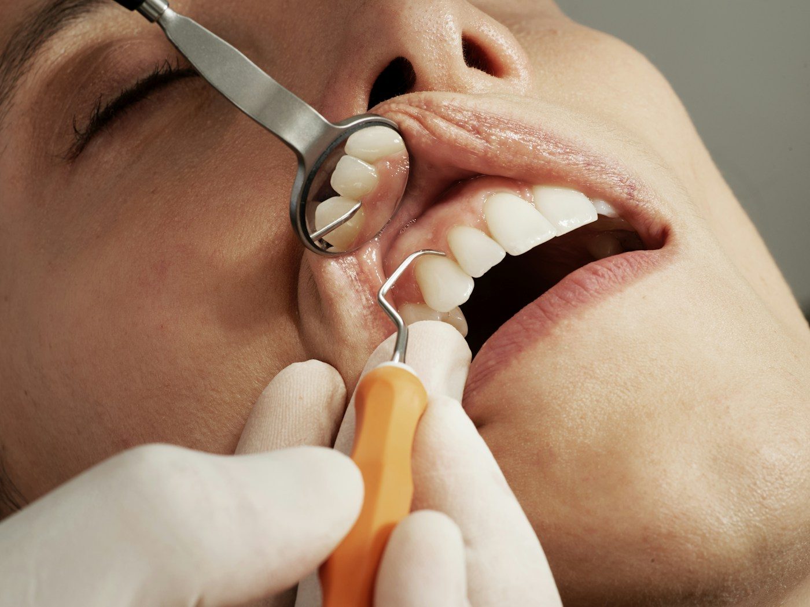

С чего начать
Уточнить доступные направления и выбрать повод для обращения.
Обсудить обращениеСовременная стоматология
с вниманием к человеку.
Начните знакомство с Kulimde. Узнайте о клинике, задайте вопросы и обсудите следующий шаг с администратором.
Место для вашей
новой истории.
Выберите тему для знакомства.
Перечень услуг будет опубликован
после подтверждения клиникой.
Уточнить доступные направления и выбрать повод для обращения.
Обсудить обращениеУзнать об услугах, стоимости и возможности записи у администратора.
Частые вопросыСвязаться с клиникой и согласовать удобный формат первого обращения.
Перейти к записиЭто навигационные карточки демонстрации, а не подтверждённый перечень медицинских услуг.

Здесь появится история Kulimde — о людях, пространстве и подходе к работе. Мы оставили место для реальных деталей, которые делают клинику особенной.
Профессиональная информация
должна быть точной.
Карточки врачей появятся после подтверждения имён, специализаций и фотографий клиникой.
Ориентировочный путь пациента.
Детали визита уточняются в клинике.
Свяжитесь с клиникой и уточните возможность приёма.
Расскажите специалисту, что вас беспокоит, и задайте вопросы.
Обсудите предложенные варианты и согласуйте следующий шаг.
Визуальное настроение проекта.
Фотографии заменяются на съёмку клиники.
Больше поводов
улыбаться.
Всё, что хочется узнать
до первого знакомства.
Оставьте заботы за порогом.
Начните с простого разговора.
Форма в демонстрационном режиме
Данные не отправляются и не сохраняются. Для реальных заявок требуется подключить обработчик.
Скоро здесь
Точный адрес ожидает подтверждения
Уточняем детали
Публикуются после согласования